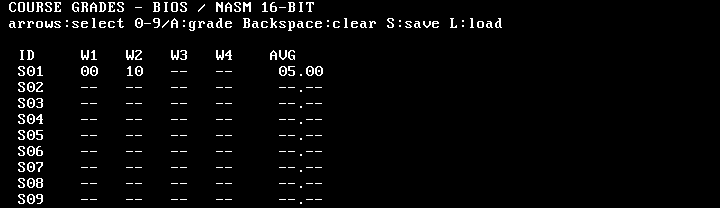

Адаптационный курс · Программная инженерия
Архитектура и организация компьютера Сквозной пример: разработка журнала оценок группы
QEMU PC · BIOS · 16-битный NASM
0–2 мин. Нам предстоит написать программу для компьютера без гостевой ОС. После каждой потребности узнаём устройство компьютера, пишем нужный код и проверяем результат в QEMU. C встречается только как пояснение алгоритма; исполняемый код — 16-битный NASM. Задача Данные Оценки студентов группы.
Действия Вводить, изменять и сохранять оценки.
С чего начать, если нет готовых библиотек и решений?
2–4 мин. Устно уточните: 16 студентов, четыре работы, оценки 0–10 и отдельное состояние «нет оценки». Нужны исправление, среднее и сохранение. Число 0 — настоящая оценка. После передачи управления нет гостевой ОС, printf или готового malloc. Какие аппаратные средства у нас есть? Простой x86-компьютер : процессор, 16 MiB ОЗУ, загрузочный диск, экран и клавиатура.
Вычисление и память Устройства 16-битный x86 real mode VGA текстовый экран BIOS + наша программа PS/2 клавиатура, COM1 Стек и таблица в RAM Отдельный IDE-диск, 1 MiB
Для лабораторной QEMU PC (i440FX) моделирует этот компьютер и его устройства.
4–7 мин. QEMU — полноценная эмулируемая машина, а не только CPU. В ней есть SeaBIOS, VGA, PS/2, дисковый контроллер. Загрузочный образ — виртуальная дискета; оценки хранятся на отдельном диске. Разрядность режима относится к исполняемому коду, не к объёму RAM. BIOS — прошивка, гостевой ОС нет. Версия 1: начнём с самого простого S01 → 07
Студент S01 получил оценку 7 .
Но кто исполнит нашу первую инструкцию?
7–8 мин. S01 — условный идентификатор студента, 07 — значение оценки. Стрелка на слайде — смысловая связь, не машинная инструкция. На первой стадии выполняется только вывод одной строки; таблицу добавим дальше. BIOS начинает загрузку После сброса CPU выбирает инструкции прошивки BIOS. BIOS выполняет начальную проверку и выбирает дискету. Читает её первый сектор по адресу 0000:7C00. Передаёт управление коду этого сектора. BIOS не загружает весь журнал за один шаг.
8–10 мин. В QEMU PC выбираем boot order=a, образ дискеты имеет размер 1.44 MiB. BIOS размещает 512-байтный сектор по физическому адресу 0x7C00; на конце сектора стоит подпись 55 AA. Дальше исполняется наш NASM boot16.asm. Здесь нет GRUB, Multiboot или перехода в long mode. Наш сектор загружает оставшийся код mov ax, 0x1000
mov es, ax ; буфер: 1000:0000
xor bx, bx
mov ah, 0x02 ; BIOS: читать сектора
mov al, 17 ; сектора 2…18
mov cl, 2 ; первый сектор чтения
int 0x13
jc boot_error
jmp 0x1000:0x0000 Сектор 1 → загрузчик; следующие → программа в RAM.
Ключевые строки boot16.asm; CH, DH, DL задаются отдельно.
10–12 мин. BIOS INT 13h AH=02 читает 17 секторов в ES:BX. Код также задаёт CH=0, DH=0 и DL — номер диска, переданный BIOS; здесь эти строки опущены ради чтения. Нельзя выйти за границу первой дорожки (18 секторов). При CF=1 или неполном чтении показываем BOOT ERROR. Far jump устанавливает CS:IP в 1000:0000. Как получить физический адрес? сегмент × 16 + смещение
Пара CS:IP Физический адрес 0000:7C000x07C001000:00000x10000B800:00000xB8000
12–14 мин. Это модель адреса в x86 real mode: два 16-битных компонента. CS:IP указывает инструкцию, DS:SI может указывать данные, SS:SP — стек. Для старта не нужно обсуждать A20 или перекрывающиеся сегменты подробно. Достаточно 16 MiB RAM QEMU, но наш короткий код находится низко в памяти. Сначала воспользуемся сервисом BIOS mov ah, 0x0e ; видеосервис teletype
mov al, '7' ; вывести символ, не число
mov bx, 0x0007
int 0x10 ; программный вызов BIOS INT 10h — наша инструкция передаёт управление прошивке.
BIOS пока берёт на себя управление видеоустройством.
14–16 мин. Этот короткий фрагмент показывает один символ из работающей процедуры bios_text. Она повторяет lodsb/INT 10h для каждого символа строки S01 grade 07. Мы сами инициируем программное прерывание INT 10h, а не получаем аппаратный IRQ от видеокарты. Позже заменим этот сервис прямой записью в VGA. Код версии 1: вывести всю запись ; SI указывает на строку «S01 grade 07»
.next:
lodsb
test al, al
jz .done
mov ah, 0x0e
mov bx, 0x0007
int 0x10
jmp .next
.done: Строка заканчивается нулевым байтом.
16–18 мин. Это внутренний цикл bios_text: SI указывает на ASCIIZ-строку S01 grade 07 в DS=CS. lodsb читает байт и продвигает SI, BIOS выводит символ, при нуле завершаем. В полном коде процедура также сохраняет AX/BX и заканчивается ret. C-эквивалент while (*p) putchar(*p++) — только объяснение алгоритма; исполняется NASM. Первая проверка BIOS → загрузочный сектор → журнал
S01 grade 07 Образ программы на дискете, команды после чтения — в RAM;
COM1 сообщает BOOT STAGE=1 и READY; VGA показывает запись.
18–20 мин. По желанию показать stage1 через make lecture4-journal-run STAGE=1. Серийный порт выдаёт машинную диагностику для автоматического теста, пользователю виден видеовывод. Различать машинный код журнала и данные оценок: пока оценка жёстко зашита в строку. Версия 2: таблица вместо одной строки S01 -- -- -- --
S02 -- -- -- --
…
S16 -- -- -- -- Нужны место для оценок и возможность рисовать таблицу.
20–21 мин. Фиксированная группа 16 студентов, по четыре работы. База данных и файловая система не нужны, пока всё помещается в небольшом массиве RAM. Переход: сначала узнаём, как адресуется память, затем рисуем значения. Байт — адресуемая единица Оценки 0…10 , код FF — «не выставлена».
16 × 4 × 1 байт = 64 байта
Для grade[i][j] смещение = 4i+j .grade[1][2] → смещение 6 байтов.
21–23 мин. У одного байта достаточно кодов. Выделенный FF вне диапазона оценок; 0 — выставленная оценка, не пропуск. Здесь счёт индексов с нуля. Связать с C-пояснением uint8_t grade[16][4], но в NASM реально хранится 64 байта в label grades. Код NASM: выделить 64 ячейки grades: times 64 db 0xff
student: db 0
work: db 0 grades + 4 × student + work — адрес выбранной оценки.
Пояснение на C: uint8_t grade[16][4];
23–24 мин. В реальном journal16.asm директива times резервирует и инициализирует 64 байта. После старта отдельный цикл rep stosb снова задаёт UNSET — исходное состояние перед загрузкой сохранений. Сегмент DS установлен равным CS, поэтому метка grades доступна через DS. В C это соответствовало бы двумерному массиву, но C не исполняется гостем. Место в памяти и содержимое — разные вещи Адрес DS:grades+6
Значение FF или 0…10.
Указатель на C обозначил бы адрес, разыменование — значение.
24–26 мин. Не выдавать метку grades за физический адрес 0x1000. DS=CS=0x1000, символ grades имеет смещение внутри загруженного 16-битного образа. Отличить IP (инструкция), метку данных и байт значения. NASM позволяет обратиться [grades+bx]. Первая попытка вывода уже работает Версия 1 просила BIOS вывести каждый символ.
Теперь посмотрим, куда попадут байты на текстовом экране.
Для VGA используем сегмент B800h.
26–27 мин. У x86 PC текстовый видеобуфер расположен у начала физической области B8000h. Память устройства не означает, что данные автоматически сохранены на диске. У современного GPU другой интерфейс; здесь сознательно выбрана простая историческая совместимость. Одна позиция VGA = два байта Младший байт Код символа'7'.
Старший байт Цвет / атрибут,0Fh.
Строка × 160 + столбец × 2 → смещение в видеопамяти.
27–29 мин. Текстовый экран 80×25: каждая строка 80*2=160 байтов. В программе vga_text вычисляет это смещение, устанавливает ES=B800h, использует stosw для пар код+атрибут. При прямой записи BIOS INT10 для текста больше не требуется. Код NASM: символ в VGA mov ax, 0xb800
mov es, ax
; DI = row × 160 + col × 2
lodsb ; AL = символ из DS:SI
mov ah, 0x0f ; атрибут цвета
stosw ; AX → ES:DI, DI += 2 Ключевые инструкции процедуры vga_text.
29–30 мин. Адрес текстовой видеопамяти получается через сегмент ES. Полный код vga_text содержит цикл до нулевого байта, вычисление DI и сохранение регистров. На слайде отмечена граница: это фрагмент, а не весь исполняемый файл. ASCII строки на экране выбраны латинскими, не обещаем Unicode. От оценки в RAM — к двум символам mov al, [grades + bx] ; получить оценку
cmp al, 0xff
je .missing ; показать «--»
call vga_two ; показать 00…10 Оценка остаётся в RAM;
Пояснение на C: g == UNSET ? "--" : two_digits(g).
30–32 мин. bx в полном redraw вычислен по 4i+j; AL получает ровно один байт. Если FF — код пропуска, иначе vga_two делит число на 10 и формирует два символа. Рисунок экрана не является главным источником оценки. Полная процедура redraw проходит 16 строк и четыре работы. Что хранится в программе? Область Пример Код в RAM Байты инструкций NASM Данные в RAM 64 оценки + служебные переменные Стек Возвраты и сохранённые регистры Видеопамять Копия для вывода на экран
32–33 мин. Общая память команд и данных характерна для фон-неймановской модели; строгая гарвардская система имела бы раздельные пространства. Здесь код и grades в RAM, VGA отдельно. На современном x86 могут быть раздельные L1I/L1D, но это уже следующий уровень устройства CPU. Итог версии 2 Вместо жёстко зашитой записи — таблица 16×4 .
Следующая проблема: как получать новые оценки?
33–35 мин. Показать stage2. RAM уже содержит таблицу, каждая ячейка обозначена --. Слайд не обещает, что пользователь уже может вводить значения: пока таблица только выводится. От текстового VGA перейти к клавиатуре и устройствам ввода. Версия 3: вводим и исправляем Стрелки выбирают поле.0–9 и A=10 выставляют оценку.Backspace означает «не выставлена».
Enter/Escape не требуются: изменение по нажатию.
35–36 мин. Результат должен появиться сразу после клавиши. Студент S01 и работа W1 выбраны в начале. Сначала воспользуемся сервисом BIOS для клавиатуры, позже заменим его собственным IRQ1 обработчиком. BIOS сообщает не оценку, а клавишу INT 16h: AH=01h → есть ли клавиша?
INT 16h: AH=00h → считать клавишу
AH = scan code Скан-код 1Eh соответствует клавише A
36–38 мин. Это программный запрос к сервису прошивки. Клавиатура через PS/2 и контроллер создаёт аппаратное событие, BIOS поддерживает очередь клавиш. INT16 AH=00 возвращает в AH scan code, AL — символ. Мы интерпретируем AH. Отдельное аппаратное IRQ обсудим в версии 4. NASM: получить скан-код через BIOS mov ah, 0x01
int 0x16 ; проверить наличие клавиши
jz .loop ; ничего нет — продолжить
xor ah, ah
int 0x16 ; взять клавишу
mov al, ah ; AL = scan code
call handle_scan Фрагмент версии 3 из journal16.asm.
38–39 мин. Этот код находится внутри главного цикла stage3. В отличие от непрерывного чтения порта мы пользуемся очередью клавиш BIOS. Если клавиши нет, снова проверяем. После чтения AH содержит скан-код. BIOS INT16 работает, пока его собственный обработчик IRQ1 обслуживает контроллер. Что соединяет клавиатуру и CPU? Контроллер PS/2 Статус 64h.60h.
Соединение Адрес/порт.
На реальных современных ПК есть иные соединения: USB, PCIe.
39–41 мин. Пользуемся BIOS, но не следует думать, что клавиша появилась в регистре сама. Контроллер обменивается сигналами по шине, IRQ1 оповещает CPU. В современных последовательных протоколах адрес, данные и управление могут быть частями пакетов по одним линиям. Устройство и программный обработчик — разные компоненты. Переводим скан-код в действие cmp al, 0x1e ; A
je .ten ; оценка 10
cmp al, 0x0e ; Backspace
je .erase ; записать FF
; клавиши 1…9 и 0 обрабатываются отдельно После проверки поле grades[4i+j] меняется;
Сокращённые ветви handle_scan.
41–43 мин. Скан-код — не готовый символ и тем более не оценка. NASM handle_scan отдельно учитывает release code, стрелки и допустимые числовые клавиши, только потом пишет в RAM. Никаких невалидных оценок: A=10, 0 и 1..9. Обновление VGA отражает новый байт, не заменяет его. В чём различие BIOS и ОС? BIOS — прошивка и базовые аппаратные сервисы;INT 16h работает и без гостевой ОС .
Программа остаётся ответственна за журнал, память и сохранение.
43–45 мин. BIOS помог при выводе первого символа, затем мы вывели VGA напрямую. Сейчас BIOS помогает с клавиатурой; в версии 4 заменим этот сервис своим обработчиком. Обычные программы под Linux вместо этого используют более общие услуги ОС и библиотек. Процессы, права и файловые системы не возникают от BIOS. Промежуточный результат S01 W1=0 → выставлен именно ноль
S01 W2=10 → среднее добавим позже
S01 W2=-- → Backspace очистил оценку Пока изменения живут только в RAM.
45–48 мин. QEMU stage3 даёт интерактивное редактирование. Между запусками результат исчезнет: образ floppy содержит только программу, журнал по-прежнему в оперативной памяти. Теперь нам нужно понять аппаратное событие от клавиатуры, а затем статистику и диск. Заменим BIOS-обработку клавиши своей PS/2 → IRQ1 → наш обработчик → очередь
Основной цикл забирает событие и меняет оценку.
Сервис INT 16h после такого перехвата уже не используем.
48–50 мин. Это смена владельца события: клавиатура больше не пополняет стандартный буфер BIOS, потому что IRQ1 обрабатываем сами. Слайд должен предупредить ошибочное ожидание, что BIOS INT16 продолжит возвращать новые клавиши. Свои вывод и диск через BIOS могут остаться, так как мы заменяем только IRQ клавиатуры. Куда CPU перейдёт по IRQ1? Режим real mode: таблица векторов прерываний IVT в начале памяти.
Вектор 09h → четыре байта: IP и CS обработчика.
PIC в BIOS-совместимой схеме маршрутизирует IRQ1 к INT 09h.
50–52 мин. Не IDT из protected/long mode: в real mode используется IVT по адресу 0000:0000. Вектор 9 имеет смещение 9*4=36=0x24; записываем offset и segment нашего irq1. BIOS обычно устанавливает свой обработчик, мы перезаписываем его на учебной машине. Для production надо учесть восстановление и прочие устройства. Код NASM: установить вектор cli
xor ax, ax
mov es, ax
mov word [es:9*4], irq1
mov ax, cs
mov word [es:9*4+2], ax
; разрешить IRQ1 в PIC, очистить буфер PS/2
sti Сокращённый install_irq1; PIC маска остаётся на других IRQ.
52–54 мин. Пока меняем IVT, прерывания выключены через cli. IVT по ES=0 хранит offset irq1 и текущий сегмент кода CS. Затем читаем маску PIC и сбрасываем бит IRQ1, очищаем готовые байты PS/2, только после этого sti. Программа не меняет IRQ0 таймера; BIOS обслуживает его как прежде. Короткий обработчик не рисует экран irq1:
push ax
push bx
push ds
mov ax, cs
mov ds, ax
in al, 0x60 ; код клавиши
; добавить AL в кольцевую очередь
mov al, 0x20
out 0x20, al ; PIC: EOI
pop ds
pop bx
pop ax
iret 54–56 мин. Это сокращённый фрагмент irq1: в полном коде сначала проверяется статус 64h и сохраняется ещё BX. ISR сохраняет использованные регистры и DS, направляет его на сегмент ядра, считывает байт при установленном битe готовности, кладёт в очередь, подтверждает PIC и возвращается через iret. Внешний IRQ — не то же самое, что вызов INT10/16/13 программой. Основной цикл обрабатывает очередь call dequeue ; AL = scan, CF=0 если есть
jc .loop
call handle_scan ; изменить RAM и перерисовать Очередь на 64 байта вмещает 63 события : одно место отделяет пустую от полной.
56–58 мин. NASM dequeue читает хвост только если он отличается от головы. IRQ1 — единственный производитель; основной цикл — единственный потребитель. При полном буфере очередное событие теряется, это явное ограничение демо. CPU здесь продолжает опрашивать очередь, но не устройство: полноценного перехода в режим ожидания нет. Три причины передачи управления Механизм Кто инициирует? INT 16hНаша программа вызывает BIOS IRQ1 Контроллер сообщает о клавише Исключение CPU Ошибка/условие при выполнении инструкции
IRQ1 не обязан переключать процесс: гостевой ОС и процессов нет.
58–60 мин. Отличие причин важнее похожего входа через вектор. BIOS INT16 — программная инструкция, IRQ1 — асинхронное событие, исключение связано с конкретной командой. При IRQ процессор сохраняет адрес продолжения и флаги. Не приписывать учебному журналу планировщик ОС. Пора показать статистику 0, 10, --, -- → 5.00
0, --, --, -- → 0.00
--, --, --, -- → нет среднего Считать только выставленные оценки.
60–61 мин. Пример включает нулевую оценку, но пропускает FF. Если нет оценок, деления не будет. Алгоритм на C можно написать кратко на доске; исполняется ниже код NASM, который суммирует четыре поля. Пояснение алгоритма на C sum = 0; count = 0;
for (j = 0; j < 4; ++j)
if (grade[i][j] != UNSET) {
sum += grade[i][j];
++count;
} Это запись идеи, не код, запускаемый QEMU.
61–62 мин. Подпись обязательна: C здесь — пояснение студентам, знакомым с его массивами. Настоящий 16-битный NASM хранит grades как последовательность байтов, перебирает регистром BX и формирует сумму. Не обещать, что GCC -m16 легко заменит NASM для простой машины. NASM: суммировать выставленные байты mov cx, 4 ; четыре работы
xor dx, dx ; DH = сумма, DL = количество
.sum:
mov al, [grades+bx]
cmp al, 0xff
je .skip
inc dl
add dh, al
.skip:
inc bx
loop .sum Фрагмент report_grade, стадия 5.
62–64 мин. BX начинается с grades+4*student; четыре последовательных чтения. 0xFF пропускаем, но ноль учитываем. Сумма максимум 40, количество 4, помещаются в однобайтные регистры. Фрагмент используется и в диагностике COM1; VGA-среднее рассчитывается аналогично в redraw. Без float: целые сотые (100 × сумма + ⌊n/2⌋) / n
Только при n > 0 . Пример: 0, 1, 1 → 0.67 .
Округляем положительное среднее к сотой, половину — вверх.
64–65 мин. Для суммы 2, количества 3: (200+1)/3=67. Деление целочисленное. Здесь NASM удобен: умножение и деление работают с AX/DX, но студентам достаточно проследить результат и ограничение диапазона. Нет ни библиотеки форматирования, ни необходимости изучать IEEE 754 второй раз. NASM: вычислить сотые ; DH = sum, DL = count > 0
mov [current_count], dl
xor ax, ax
mov al, dh
mov bx, 100
mul bx
; прибавить count/2, затем делить на count
div cx AX содержит сотые; далее два десятичных разряда выводятся отдельно.
Ключевые шаги report_grade; подготовка CX опущена.
65–66 мин. В исходнике перед делением CX сначала получает половину count для прибавления, потом count. DX обнуляется перед DIV CX; диапазон достаточно мал. Код на слайде нарочно фрагмент, все регистровые операции есть в journal16.asm. Учитель может сопоставить это с C-формулой из прошлого слайда. Откуда CPU берёт код и данные? Инструкция CS:IP → байты кода
Операнд DS:grades+BX → байт оценки
Общая RAM, но роли двух потоков различаются.
66–68 мин. Строгая гарвардская модель разделяет память команд и данных; у нашей x86-системы общее адресное пространство. На современных ядрах L1I и L1D часто различаются. Но 16-битный режим исполнения сам по себе ничего не обещает о микросхемах кэша и реальной производительности в QEMU. Иерархия памяти и кэш регистры → кэш → RAM → накопитель
Кэш хранит копии линий: последовательные оценки
Например, 64-байтовый массив может занять 1 или 2 линии по 64 байта — зависит от выравнивания.
68–69 мин. Быстрее/меньше ближе к ядру — общий тренд, не универсальная гарантия любой операции. Кэш-линия у современного x86 часто 64 байта. Даже если массив имеет ровно 64 байта, при невыровненном начале он пересекает две линии. Эти значения не измеряются временем работы QEMU. Различать SRAM-кэш и DRAM-RAM. Стек и собственные данные SS:SP → адрес возврата / сохранённые AX, BX…
DS:grades → 64 байта оценок
ES:B800 → видеопамять Разные роли областей памяти; стек не содержит всю программу.
69–71 мин. NASM устанавливает SS=0x7000, SP=0xf000. Вызовы, прерывания и процедуры сохраняют регистры на стеке. Таблица оценок — статический резерв внутри сегмента кода/данных и явно инициализируется FF. При фиксированных 16 студентах аллокатор не нужен; добавление динамических записей потребовало бы реализации своей кучи. Результат в работающей машине 
Оценки 0 и 10 → среднее 05.00 на VGA.
Снимок настоящей 16-битной версии QEMU, не макет интерфейса.
71–72 мин. Это обрезанный для читаемости снимок экрана QEMU стадии 6; алгоритм средней оценки добавлен в стадии 5. Скриншот показывает S01 W1=00 W2=10 и AVG=05.00. COM1 даёт диагностическую запись для теста. Пока не сохранили на диск, отключение питания удалит оценки из RAM. Выключили питание — оценки исчезли RAM энергозависима; при старте таблица снова инициализируется кодом FF.
Нужен отдельный энергонезависимый носитель.
72–73 мин. Показать новый запуск стадии 5: пользовательские оценки не сохраняются. Программа на виртуальной дискете — отдельно, оценки будут записаны на отдельный виртуальный HDD. На реальном компьютере BIOS-сервис доступа к диску является интерфейсом прошивки к контроллеру. HDD и SSD — разные носители HDD Пластины, головка, вращение.
SSD NAND Flash + контроллер.
QEMU предоставляет IDE-совместимый диск; его время не моделирует паспортные задержки HDD/SSD.
73–75 мин. Обе технологии хранят без питания. Время чтения маленького случайного блока и пропускная способность большого потока — разные характеристики. Наш файл grades.img на хосте имитирует блоковый накопитель гостю. На современном ПК подключение может быть SATA или PCIe/NVMe; M.2 — форма/разъём, а не протокол. Не нужен файл — нужен один сектор Образ дискеты Отдельный жёсткий диск Загрузчик + программа Сектор LBA 1 с оценками BIOS boot drive 00h BIOS drive 80h
Здесь нет файловой системы и имён файлов.
75–76 мин. Дискета 1.44 MiB состоит из boot sector и программы, BIOS читает её через INT13 AH02. Отдельный IDE-диск 1 MiB содержит данные, BIOS видит его первым HDD с DL=0x80. Сектор LBA1 — второй сектор этого диска. Адресация LBA не равна имени файла на файловой системе. Как BIOS найдёт сектор LBA 1? dap: db 16, 0 ; размер пакета
dw 1 ; один сектор
dw sector, 0x1000 ; ES:BX буфер для BIOS
dq 1 ; номер LBA
mov si, dap ; DS:SI → пакет
mov dl, 0x80 ; HDD, не boot floppy
mov ah, 0x42 ; EDD: чтение
int 0x13 Фрагмент journal16.asm; для записи AH=43h.
76–78 мин. Уточнить: DAP задаёт буфер offset:segment, поле здесь 1000:sector; DS=1000 для пакета, а BIOS использует адрес из самого DAP для данных. Один сектор имеет 512 байт. INT13 Extensions AH=42/43 работают с LBA; BIOS обслуживает IDE-контроллер. Нет собственной файловой системы и прямого PIO-драйвера в этой версии. CF при ошибке проверяется. Формат сектора — наш договор Байты Значение 0–3 GR164–7 Версия 1 · 16 · 4 · резерв 8–71 64 оценки 0…10 или FF 72–73 16-битная сумма байтов 0–71 74–511 Нули
78–80 мин. Не пишем RAM «как есть»: размер и расположение C-структуры могут иметь padding, а наш массив байтов кодируется явно. GR16 отличается от архивного формата GRD4 версии x86-64; загрузка старого сектора вернёт BAD_FORMAT. Контрольная сумма обнаруживает случайное повреждение, но не аутентифицирует данные. Код NASM: сериализовать оценки mov di, sector
mov cx, 256
xor ax, ax
rep stosw ; заполнить 512 байтов нулями
mov byte [sector], 'G'
mov byte [sector+1], 'R'
; записать '1', '6', версию и размеры
mov si, grades
mov di, sector+8
mov cx, 64
rep movsb ; оценки → сектор Сокращённый save_grades, затем пишем checksum и сектор.
80–81 мин. Сначала готовим временный 512-байтовый буфер в RAM. ES=DS для movsb/stosw; оба сегмента указывают на область программы. Дальше в действующем исходнике задаются байты заголовка, четыре поля, вычисляется checksum, записывается в sector+72 и вызывается disk_io с AH=1. Это не запись файла «journal.dat». Код NASM: запросить запись через BIOS mov si, dap
mov dl, 0x80
mov ah, 0x43 ; EDD: запись по LBA
xor al, al
int 0x13
jc .error ; CF показывает ошибку BIOS и контроллер обрабатывают детали передачи блока.
Фрагмент disk_io; DOS и гостевая ОС не участвуют.
81–82 мин. Вызов инициирован нашей программой, но BIOS выполняет необходимые аппаратные команды. Данные лежат в секторном буфере по адресу, записанному в DAP; BIOS копирует 512 байтов на накопитель. CF говорит об ошибке, журнал показывает NO_DISK и не сообщает SAVED. В учебном RAW-образе результат сохраняется после завершения QEMU, но модель не гарантирует атомарность при реальном отключении питания во время записи. А что делает контроллер под BIOS? PIO CPU пересылает слова через аппаратные порты.
DMA Контроллер передаёт блок в RAM/из RAM после настройки CPU.
Прерывание сообщает о завершении, но само не переносит байты.
82–83 мин. В исходном 64-битном демо мы писали PIO-драйвер сами; в действующем 16-битном демо вызываем BIOS INT13 и не предполагаем конкретного метода внутри BIOS. Контраст PIO/DMA теоретический. BIOS-сервис не превращается в операционную систему и не создаёт файловую систему. Сначала проверить, потом заменить RAM Есть ли диск? Сигнатура GR16? Версия и размеры 16×4 подходят? Контрольная сумма совпала? Все оценки допустимы? Только затем копировать 64 байта в grades. Ошибочная загрузка оставляет рабочую таблицу без изменений.
83–84 мин. Названия ошибок: NO_DISK, EMPTY, BAD_FORMAT, UNSUPPORTED_VERSION, BAD_CHECKSUM, BAD_GRADE. Образ GRD4 предыдущего варианта отвергается без порчи уже введённых оценок. В test.py каждое условие проверено, в том числе отклонение одного недопустимого байта с правильной суммой. Сохранить, выключить, загрузить S01 W1=0, W2=10 → AVG=5.00
S → SAVED
[новый запуск QEMU с тем же grades.img]
INT 13h → LOADED
S01 W1=0, W2=10 → AVG=5.00 Диск обеспечивает сохранность между запусками; RAM — текущую работу.
84–86 мин. Демонстрация stage6 автоматически пробует загрузить оценки на старте; клавиша L повторяет чтение. Для автоматической проверки используется COM1 и отправка клавиш в QEMU monitor. Дискета с программой при этом остаётся той же, сохраняется только отдельный RAW-образ данных. Одна копия сектора не даёт транзакционной устойчивости. Что пришлось написать самим? Задача Механизм Загрузка BIOS → сектор → NASM Экран и клавиатура BIOS, VGA, затем свой IRQ1 Среднее и память Регистры, стек, массив в RAM Хранение Сектор через BIOS INT 13h
86–87 мин. Здесь видим CPU, RAM, накопитель, устройства, контроллеры и шины как взаимосвязанную систему. Библиотеки и операционная система обычно берут большую часть повторяющейся инфраструктуры на себя. В нашем примере BIOS остаётся прошивкой, а не гостевой ОС. Что будет иначе на современном ПК? Интерфейсы USB, PCIe, SATA, NVMe.
Программная среда Загрузчик, ОС, драйверы,
M.2 — разъём/форм-фактор, NVMe — протокол накопителя.
87–88 мин. Старый текстовый VGA и PS/2 выбраны для простой лабораторной, они не описание всех современных компьютеров. У GPU сильный параллелизм, но он не ускорит одно сложение оценки. RAM и VRAM имеют разную роль; SSD и HDD сохраняют без питания. Современная ОС обеспечивает интерфейсы устройств и изоляцию процессов. Проверка понимания Чем INT 16h отличается от IRQ1? Почему DS:grades не видеопамять? Где лежит программа до и после загрузки? Почему после SAVED нет файла с именем? Следующая тема — зачем нужна операционная система.
88–90 мин. Ответы: программный вызов BIOS против внешнего IRQ; DS хранит данные журнала, ES=B800 задаёт VGA; образ на дискете, команды во время работы в RAM; мы записали сектор без файловой системы. Вопросы можно задать до объяснения ответов. Переход к процессам, файлам и запуску программы в ОС на лекции №5. 16-битный загрузочный сектор bits 16
org 0x7c00
; код BIOS-загрузчика
times 510 - ($ - $$) db 0
dw 0xaa55 Сигнатура 55 AA в конце 512-байтового сектора.
Дополнительно. Ограничение загрузочного сектора — 512 байтов, журнал хранится в последующих секторах дискеты. BIOS read AH02 сектор2..18 в 1000:0000. При CF или числе прочитанных секторов отличном от17 загрузчик пишет BOOT ERROR. Не путать этот boot sector с отдельным диском оценок. Сегменты и пределы real mode physical = 16 × segment + offset
1000:0006 → 0x10006;B800:0000 → 0xB8000.
Полноценная поддержка произвольной памяти и A20 остаётся вне учебной версии.
Дополнительно. Указанные адреса — примеры, символ grades не находится по адресу 1000:0006 автоматически. Сегменты дают перекрывающиеся представления адресов; ограничение 64 KiB на смещение. Наш образ журнала меньше 17 секторов и загружается в 1000:0000, стек вынесен в 7000:F000. Коды клавиш PS/2 Клавиша Make code 0 0BA 1EBackspace 0ERight E0 4D в IRQ
BIOS INT16 возвращает код стрелки в AH без E0.
Дополнительно. При переходе с BIOS INT16 на собственный IRQ1 форма данных немного различается: BIOS отдаёт scan code стрелки AH=4D, а сырой PS/2 даёт префикс E0, затем 4D. handle_scan поддерживает оба пути. Break-коды игнорируются; неподдерживаемые клавиши не меняют оценку. Вектор и обработчик IRQ1 IVT 0000:0024 → offset irq1 + CS
IRQ1 → сохранить регистры → считать 60h
→ очередь → EOI → IRET Очередь из 64 байт хранит не более 63 событий.
Дополнительно. Вектор 9 лежит по адресу 9*4. install_irq1 временно запрещает прерывания при переписывании IVT и размаскирует клавиатуру через PIC 0x21. IRQ0 BIOS не трогаем. ISR не вызывает BIOS INT16, иначе смешались бы два владельца клавиатуры. Формат GR16 без структур C 0..3 : G R 1 6
4..7 : version=1, students=16, works=4, reserved=0
8..71 : 64 grades
72..73: 16-bit sum(bytes 0..71), little-endian
74..511: zero Версия GRD4 не читается новым форматом.
Дополнительно. Контрольная сумма — простая сумма байтов modulo 65536, не криптографическая и не защита от преднамеренных изменений. Сначала проверяем сигнатуру, версию и размер, checksum и допустимые оценки; только потом copy into grades. При внезапном выключении посреди записи один сектор может оказаться непригодным: учебная схема не атомарна. От простой машины к обычному ПК Эта лабораторная BIOS, real mode, VGA text,
Современная система UEFI, защищённые адреса,
Уровень кэша и права страниц — разные вопросы.
Дополнительно. У современной машины раздельные L1I/L1D могут сосуществовать с общей адресацией команд и данных. Защита исполнения страницы зависит от режима/ОС и не следует автоматически из термина «фон Нейман». Для современной графики нужен драйвер, не запись в B800. Лекция использует одну простую платформу как ступень к большому курсу.